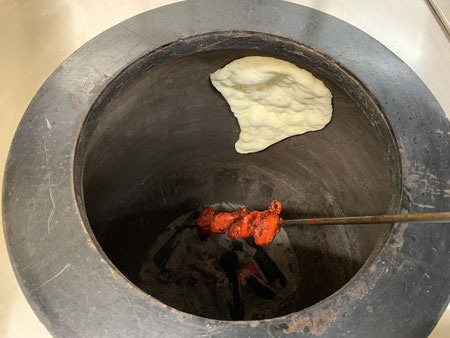
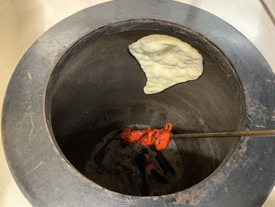
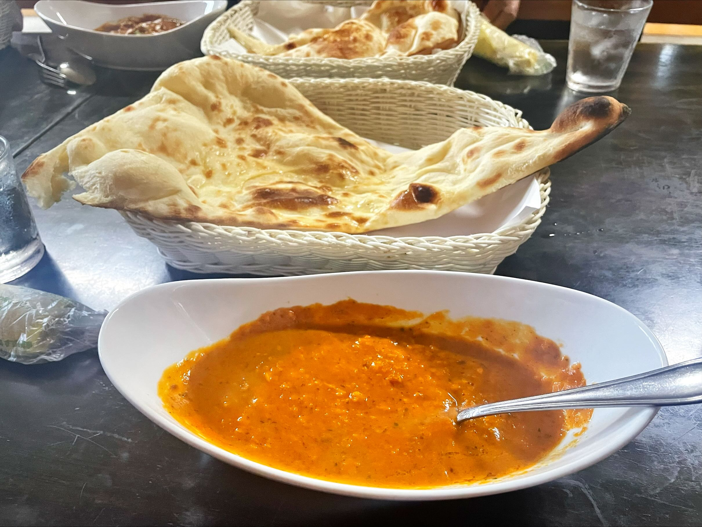

インドカレー店の現状
１.インドカレー店とは
２.ナンの普及
３.店舗数増加の背景
４.現在の状況
インドカレー店とは
正確にはインド・ネパール料理店
店員はほとんど外国の人、店内は民族的な雰囲気
バターチキンカレー、ラッシーや大きなナン・・・
ナンの普及
日本のインドカレー店ではおなじみの
バターチキンカレーやナンといった文化
→インドではあまり一般的でない

石材店社長 高橋重雄
大正時代に創業、パン窯の製造を生業とする。地元の学校給食用の窯が主力商品
高度経済成長期、給食用のパンの製造は大手メーカーが電気オーブンを使って
一気に行うことに。 →パン屋の激減、パン窯も売れない
ナンを焼くための土窯・タンドールを雑誌で見かけ、インド料理に活路を見出す
大正時代に創業、パン窯の製造を生業とする。地元の学校給食用の窯が主力商品 高度経済成長期、給食用のパンの製造は大手メーカーが電気オーブンを使って
一気に行うことに。 →パン屋の激減、パン窯も売れない
ナンを焼くための土窯・タンドールを雑誌で見かけ、インド料理に活路を見出す
石材店社長 高橋重雄
しかし、タンドールは北インドの高級店でのみ使われていた
日本のインド料理店自体３０軒もなく、全く売れなかった。
老舗に売り込んだことで次第に名が売れていくように
※ネパールではインドよりタンドールを使う料理が多い

しかし、タンドールは北インドの高級店でのみ使われていた
日本のインド料理店自体３０軒もなく、全く売れなかった。
老舗に売り込んだことで次第に名が売れていくように
※ネパールではインドよりタンドールを使う料理が多い 
店舗数増加の背景
- 昭和の時代に来日したインド人が店で提供したのが源流
- →そのメニューを一般化していったのは、インド人よりむしろ
- 彼らの店で働き、後に独立していったネパール人
カースト制度の影響？
ネパール人のほうが人件費を安く抑えられる
店舗数増加の背景
- かつてインドカレー店で働いていたネパール人の独立
- 主要な産業のない、現金収入が得られないネパールからの脱出
- ビザの取得要件の緩和、ブローカーの出現
（選んだブローカーによっては、厳しい搾取を受けることも）
- 日本での需要
- かつてインドカレー店で働いていたネパール人の独立
- 主要な産業のない、現金収入が得られないネパールからの脱出
- ビザの取得要件の緩和、ブローカーの出現
（選んだブローカーによっては、厳しい搾取を受けることも） - 日本での需要
現在の状況
現在の状況
- 店舗数は一説によると５０００店以上。日本文化に溶け込んだ存在
- 「絶対に失敗できない」という思いからくる、コピペ的メニュー
- ↑スパイス控えめのバターカレーやナン、オレンジ色のソースがかかったサラダなど・・・
- ブローカーとのトラブルの多発
- 日本を選ばない人も出てきている
- 店舗数は一説によると５０００店以上。日本文化に溶け込んだ存在
- 「絶対に失敗できない」という思いからくる、コピペ的メニュー
- ↑スパイス控えめのバターカレーやナン、オレンジ色のソースがかかったサラダなど・・・
- ブローカーとのトラブルの多発
- 日本を選ばない人も出てきている
進む日本離れ（？）
- 英語圏のアメリカやカナダを選ぶ人も。
元日本在住のネパール人のコミュニティも存在する
- ただ、制度や医療面での安心感から日本の人気は未だ根強い。

- 英語圏のアメリカやカナダを選ぶ人も。
元日本在住のネパール人のコミュニティも存在する - ただ、制度や医療面での安心感から日本の人気は未だ根強い。